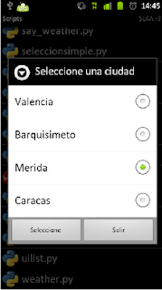

Widgets en Android con python. Parte 8 (selección simple y botones)
Posted on Sat 02 April 2011 in Tutorial Python en Android • 2 min read
Continuando con los artículos sobre los widgets de Android, ahora se agregará una mejora al de selección simple. Se le incluirá 2 botones, uno de seleccionar y otro para salir.
El ejemplo muestra una serie de ciudades, se selecciona una y luego se le da el botón seleccionar, al final se muestra la ciudad que se ha seleccionado.
El código se muestra a continuación:
#!/usr/bin/env python
#Se importa el módulo android y time
import android, time
#Se crea una instancia de la clase android
droid = android.Android()
#Se define el título de la ventana
titulo = "Seleccione una ciudad"
#Se define una lista con las ciudades a seleccionar
ciudades = ['Valencia','Barquisimeto','Merida','Caracas']
#Se crea la ventana con el título
droid.dialogCreateAlert(titulo)
#Se agrega las ciudades a la lista de selección
droid.dialogSetSingleChoiceItems(ciudades)
#Se agrega el botón seleccionar
droid.dialogSetPositiveButtonText('Seleccionar')
#Se agrega el botón salir
droid.dialogSetNegativeButtonText('Salir')
#Se muestra la ventana de dialogo
droid.dialogShow()
#Se captura la respuesta de los botones
respuesta = droid.dialogGetResponse().result
#Se captura la ciudad seleccionada, se captura el número en la lista.
#Items es una lista de eventos, el valor 1 guarda el resultado de una lista y como se selecciono
#un solo elemento se solicita el valor cero de esa lista para tener el item seleccionado.
items = droid.dialogGetSelectedItems()
#Se el botón que se le da clip es seleccionar se busca que ciudad se selecciono.
if respuesta['which'] == "positive":
#Se muestra un mensaje de la ciudad seleccionada,
droid.makeToast("La ciudad seleccionada es: %s " %ciudades[int(items[1][0])])
time.sleep(2)
else:
#Si se seleciono el botón salir se muestra un mensaje al respecto.
droid.makeToast("Saliendo del programa")
time.sleep(2)
En la figura se muestra las ciudades a seleccionar con los botones seleccionar y salir.

===
¡Haz tu donativo! Si te gustó el artículo puedes realizar un donativo con Bitcoin (BTC) usando la billetera digital de tu preferencia a la siguiente dirección: 17MtNybhdkA9GV3UNS6BTwPcuhjXoPrSzV
O Escaneando el código QR desde billetera: